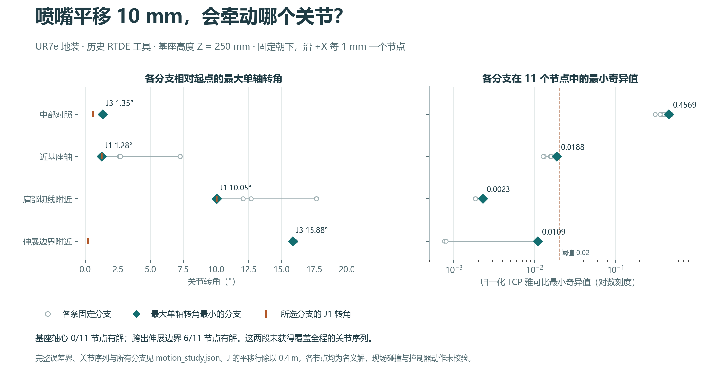

打印工作空间实验资料
工件数据与实验图
面积和最大方形使用 2 mm 水平网格，沿工件高度每 2 mm 检查一次。各位置分别计算能达到的喷嘴方向数。

整个工作空间的体积与三种安装的示意图
把不同高度的可达面积沿世界 Z 积分，可得到指定姿态条件的可达体积；这一体积允许每个高度使用不同的 XY 位置。
| 安装 | 姿态不限 / m³ | 固定朝下 / m³ | 25 姿态全部可达 / m³ |
|---|


轮廓的检验方法、记录与回放示例
参数与已有记录一致时，网页直接回放。新轮廓由项目的 Python 逆运动学与碰撞程序计算。静态页面可回放已有记录。
喷嘴竖直朝下、滚角为零，沿指定高度的方形四边走一圈。依次检查关节能否连续经过各点，以及机器人各部件之间、与名义工装、与已打印件之间的接触。多分支规划依次检查本层起点可选的固定构型，按关节限位、运动连续与模型采样接触筛选。遇到无法继续验证的节点，只播放已检查通过的前段。进场和离场动作需要另行规划。第六轴角度取解缠后的轨迹，允许的软管扭转量需单独测量。
打开工作台回放轮廓喷嘴移动 10 mm，关节需要转多少？
打开关节运动对照图 ↗
靠近基座轴和手臂伸展边缘都会改变关节响应。放置工件时还要检查实际刀路方向、关节余量和跟踪误差。
查看六轴转角与 RoboDK 仿真对照
地装，喷嘴垂直朝下，在安装中心以上 250 mm 沿世界 +X 移动 10 mm。各关节转角取相对起点的最大偏移；逐分支复核记录保留段内运动学界。

检验三层连续方形轮廓与不同起点
喷嘴固定朝下，在 H = −650、−500、−350 mm 各走一圈 200 × 200 mm 轮廓，再沿同一角点上升。三圈总长 2.7 m；分别改变方形中心和安装方式。
| 安装 | 中心 (150, 0) mm | 中心 (450, 0) mm | 中心 (450, 200) mm |
|---|
通过表示已有整条合法固定关节分支。该路径要求关节插值段内的跟踪偏差界不超过 0.5 mm 和 0.5°，以 0.4 m 归一化的雅可比最小奇异值下界至少为 0.02。打印速度和喷头与材料的干涉仍需使用实际工艺检验。
九组路径及通过案例的关节序列逐点查看三种安装的局部运动与近轴区域
在同一起点，喷嘴朝下，分别沿世界 +X、+Y、+Z 移动 10 mm。比较三条线共用的起始关节分支，选择使最大单关节转角最小的一支。
| 全高度汇总 | 起点 | 朝下有解 | 三方向有共同分支 | 中位数 / °·mm⁻¹ | 第 90 百分位 / °·mm⁻¹ |
|---|
基座轴随安装转向：地装、吊装竖直，侧装水平。轴距分组用来比较这些取样位置。速度还与刀路方向及进给有关。
采样精度、局部加密与实验适用范围
| 研究工况 | 共有面积 / m² | 最大方形边长 / mm | ||||
|---|---|---|---|---|---|---|
| 粗网格 | 主网格 | 加密 | 粗网格 | 主网格 | 加密 | |
本研究采用名义 UR7e 关节和归档工具偏置。实际支架、工装、喷头、管线、工件碰撞和零件变形需实测。网格间距描述计算取样，实机精度需要另行标定。